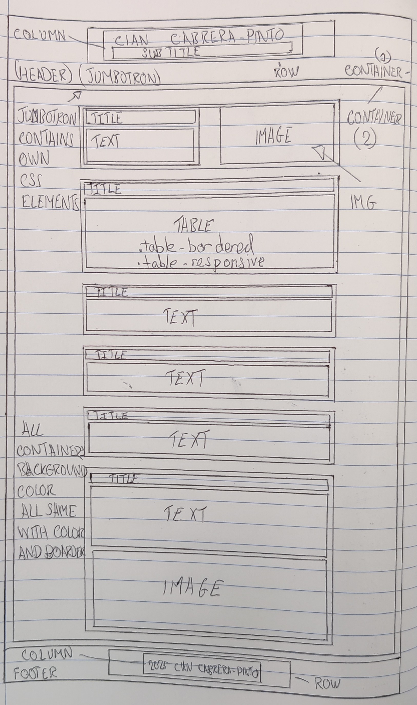

Cian Cabrera-Pinto Portfolio Report
Overview
This report details the development of a personal portfolio website for Cian Cabrera-Pinto, a prospective UX/UI Designer from Waterford. The website aims to showcase Cian's skills, interests, inspirations, and future plans. It serves as an initial step in building an online presence and portfolio.
Key Features and Sections
- Header/Jumbotron: Introduces Cian with a title and brief description.
- About Me: Provides a personal introduction, educational background, and career aspirations, accompanied by a profile picture.
- Skills & Interests: Lists skills and interests with proficiency levels in a table format.
- Inspirations: Highlights individuals who inspire Cian and explains their impact.
- Reflection & Future Plans: Reflects on the website's development and outlines potential improvements.
- Future Goals: Details future professional and project goals.
- Design Process: Describes the design process and includes an image illustrating the page organization.
- Footer: Includes copyright information.
Technical Implementation
The website was built using HTML for structure, CSS for styling, and Bootstrap for responsive design. Key technical aspects include:
- HTML Structure: Semantic HTML5 tags were used to structure the content, ensuring accessibility and SEO best practices.
- CSS Styling: Custom CSS was implemented for layout and visual design, with media queries for responsiveness.
- Bootstrap Integration: Bootstrap 5 was used for its grid system and pre-built components, facilitating a responsive design that adapts to different screen sizes.
- Image Optimization: Images were optimized for web use to ensure fast loading times.
Example of HTML structure:
<section id="about-me" class="mb-5 p-4 rounded">
<!-- Content -->
</section>
Example of CSS styling:
.container section {
background-color: #e6f7ff;
border: 1px solid #add8e6;
border-radius: 10px;
padding: 20px;
margin-bottom: 20px;
}
Design Process
The design process involved:
- Content Planning: Defining the website's purpose and content.
- Wireframing: Creating a hand-drawn diagram to visualize the page layout and content hierarchy.
- Implementation: Writing HTML, CSS, and integrating Bootstrap.
- Testing: Ensuring responsiveness and functionality across different devices.

Reflection and Future Improvements
The website serves as a solid foundation for Cian's online portfolio. Future improvements could include:
- Portfolio Page: Adding a page to showcase projects and case studies.
- Contact Page: Implementing a contact form for easy communication.
- Blog: Adding a blog section to share design insights and updates.
- Enhanced Interactivity: Incorporating interactive elements and animations.
Conclusion
This portfolio website effectively presents Cian Cabrera-Pinto as a prospective UX/UI Designer. It demonstrates his skills, interests, and aspirations, providing a platform for future growth and professional networking. The website is responsive, well-structured, and visually appealing, reflecting Cian's commitment to design principles.